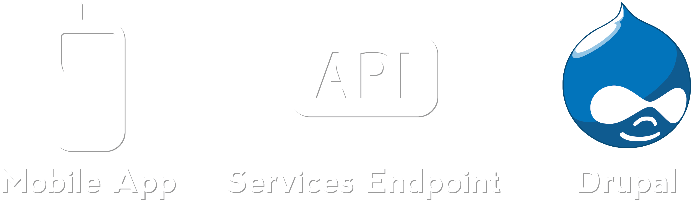

Mobile Apps
with Drupal
Created by Alex Hripak / @alexh58
:/ root$ WHOAMI;
Scenario
You = Excellent web developer
Client = Thinks you know everything "techy"
We love our current Drupal website, but we want a mobile app now too. You guys do that, right?
WHAT‽
(╯°□°)╯︵ ┻━┻
Your options
Responsive Theme
Mobile Theme
Native App
Responsive Theme
Your ideal option.
- Omega Theme
- Zen Theme 7.x-5.x
Mobile Theme
Difficult to maintain multiple themes.
- Mobile Theme
- Mobile jQuery Theme
Native App
Only use if you need device features!
- Apache Cordova (AKA Phonegap)
- Titanium
- Mobile App Generator
- Drupal iOS SDK
Mobile Stack

Apache Cordova

- Uses a UIWebView
- Access native functions via JavaScript
- Somewhat OS independent
- Implement your own plugin
Example Call to Method
navigator.camera.getPicture(onSuccess, onFail, {
quality : 50,
destinationType : Camera.DestinationType.DATA_URL
});
function onSuccess(data) {
$('#myImage').attr('src', "data:image/jpeg;base64," + data);
}
function onFail(message) {
alert('Failed because: ' + message);
}Pull up the camera, and put the contents into an image.
But...
- Testing sucks, sort of
- jQuery Mobile is a PITA
- Mobile Browsers have quirks
- UIWebView is missing Nitro
Services
- Endpoints for external apps to talk with drupal
- Accepts many different formats (i.e. JSON, SOAP)
- Exposes basic CRUD actions
- Implement your own action/operation
Example Login with Services
var user = {
username : 'test',
password : 'password'
};
$.ajax({
url : "http://localhost/api/user/login.json",
type : 'post',
data : $.param(user),
dataType : 'json',
error : function() {
console.log("Failed to login");
},
success : function(data) {
console.log("Logged in!");
}
});Here the end point name is api.